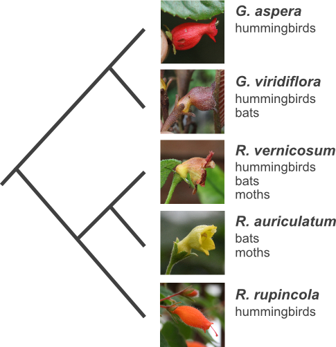

 Different pollinators exert different selection pressures on various floral traits, resulting in floral displays adapted to different pollinators. The combinations of pollinator-related traits to which flowers of different species converge are called "pollination syndromes". Transitions between pollination syndromes are common, but we still know relatively little regarding the reasons or the genetic mecanisms of such shifts.
The genera Gesneria and Rhytidophyllum, from the african violet family, form a fantastic natural group to study transitions of pollination syndromes. Important work led by Silvana Marten-Rodriguez has shown that pollination syndrome transitions occured several times independently in the group. She showed that hummingbird pollination (red tubular flowers, diurnal nectar production) is the ancestral condition in the group and bat/moth pollination (white or green campanulate flowers, nocturnal nectar production) and generalists syndromes (subcampanulate flowers, various colors) has evolved at several times independently.
Our objective consists in determining the genetic bases of these transitions. We use controlled crosses and quantitative genetic tools to estimate how many genes were involved in these transitions and if the same genes have been involved in the independent transisions. This will help us to better understand how easy it is to evolve towards a new pollination syndrome. We also use comparative phylogenetic approaches to determine the ecological and biogeographic conditions that might have been important in drivng pollination syndrome transitions and in structuring biodiversity in the group.
John L. Clark, U Alabama, USA
Silvana Marten-Rodriguez, Inecol, Mexico